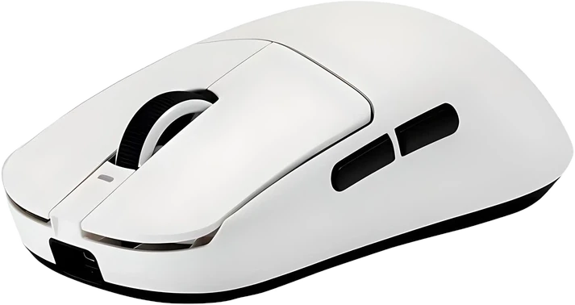
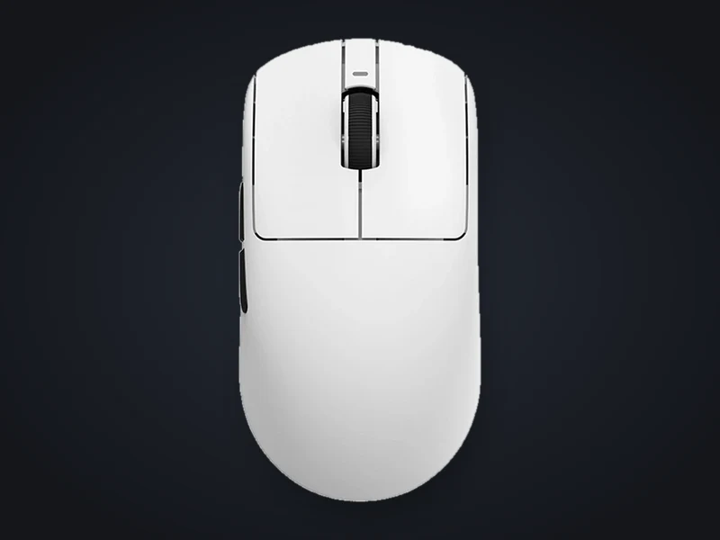
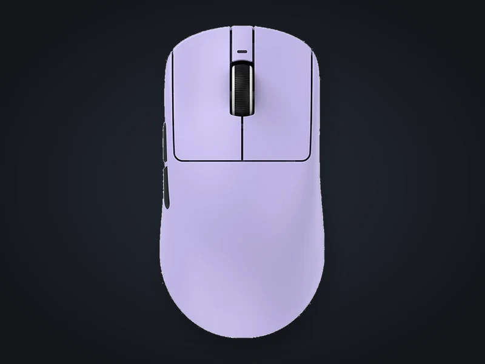
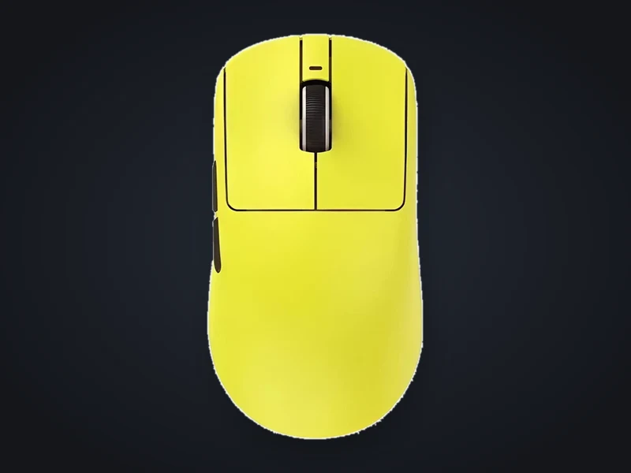
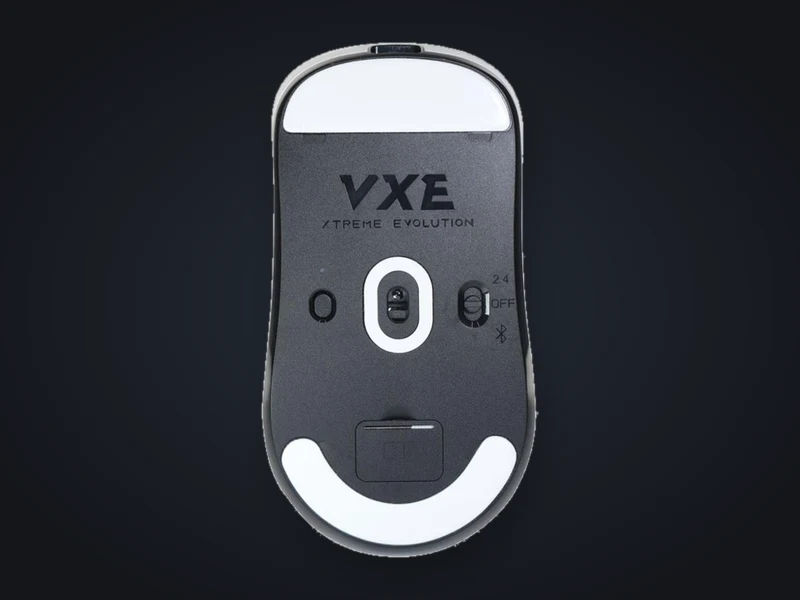
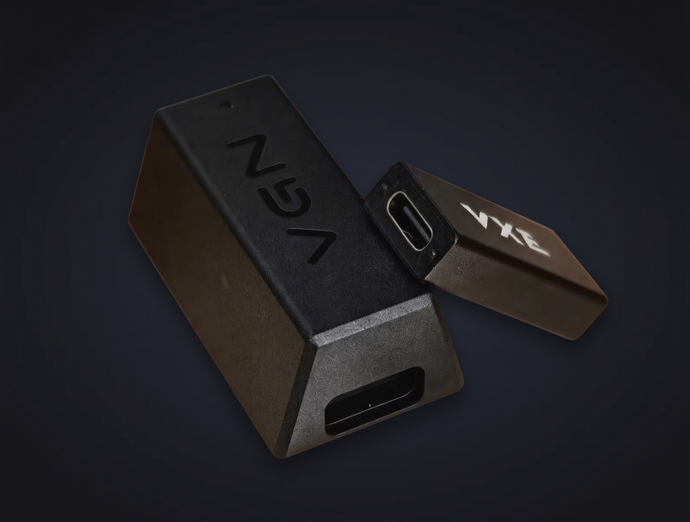
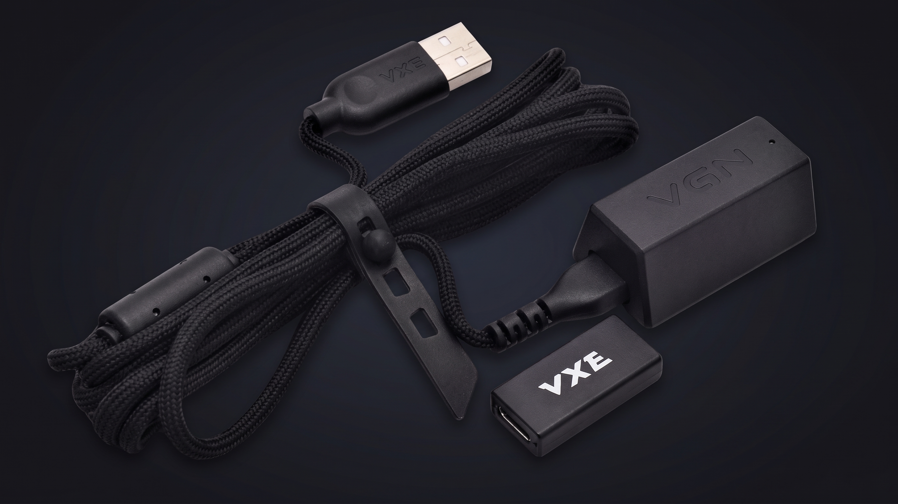

Ультралегка: 54 г
Довгі ігрові сесії без втоми в зап'ясті. Симетрична форма розміром 120,6 × 64 × 37,8 мм підходить для різних хватів.
Ультралегка бездротова ігрова миша
Це моя щоденна миша: 54 грами, сенсор PAW3395 і до 150 годин без підзарядки. На цій сторінці зібрано все, що варто знати перед покупкою.

Те, що відчувається щодня, а не лише в таблиці характеристик.
Довгі ігрові сесії без втоми в зап'ясті. Симетрична форма розміром 120,6 × 64 × 37,8 мм підходить для різних хватів.
До 26 000 DPI, 650 IPS і 50 G прискорення: курсор точно йде туди, куди ви його ведете.
2.4 ГГц через приймач, Bluetooth або дріт Type-C. Частота опитування 125–4000 Гц, для 2–4 кГц потрібен окремий 4K-приймач.
Акумулятор на 500 мА·год тримає до 150 годин при 1000 Гц і заряджається через Type-C.
Усе, що потрібно для порівняння з іншими мишами.
| Сенсор | PAW3395, оптичний |
|---|---|
| Роздільна здатність | до 26 000 DPI |
| Швидкість / прискорення | 650 IPS / 50 G |
| Частота опитування | 125–4000 Гц (2–4 кГц з 4K-приймачем) |
| Контролер | Nordic 52840 |
| Підключення | 2.4 ГГц, Bluetooth, дротове Type-C |
| Акумулятор | 500 мА·год, до 150 год (1000 Гц) |
| Вага | 54 г |
| Розміри | 120,6 × 64 × 37,8 мм |
| Перемикачі / колесо | Kailh Sword 100M / TTC Silver |
| Кольори | білий, чорний, бузковий, жовтий |
Кольорові версії, вигляд знизу та аксесуари, що йдуть у парі.






Напишіть мені: розповім, як вона поводиться в іграх і щоденній роботі.
Це навчальний проєкт, тому форма поки що нікуди не надсилає дані.